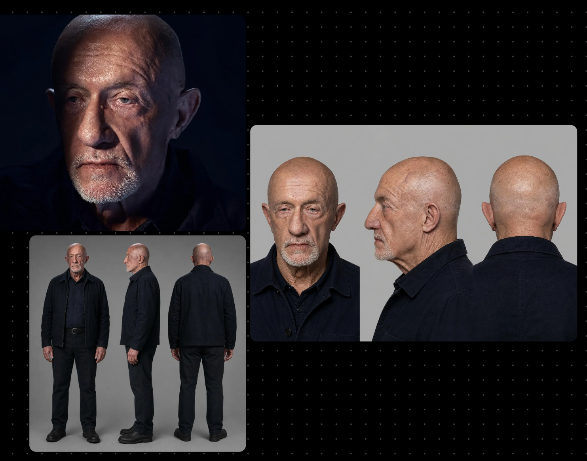
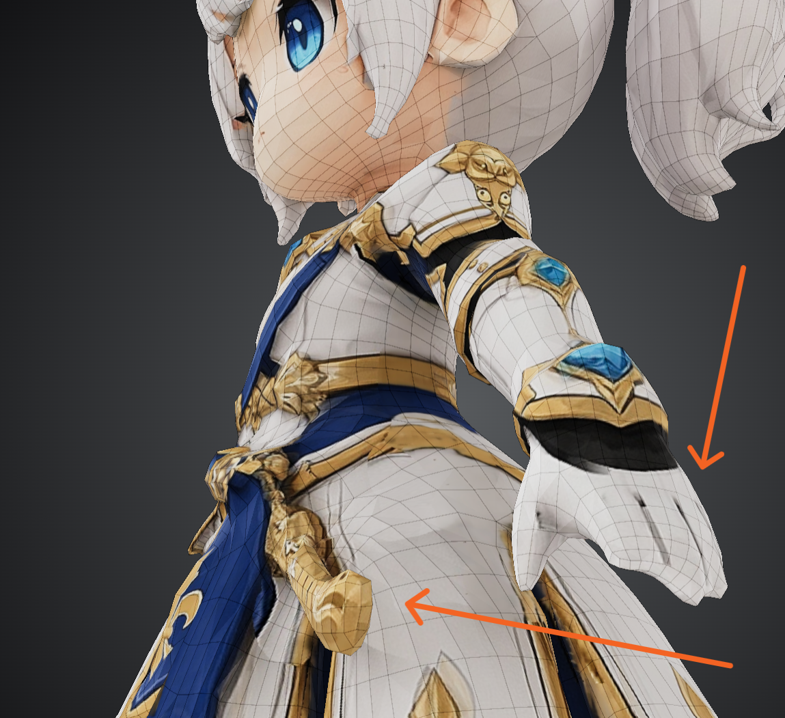
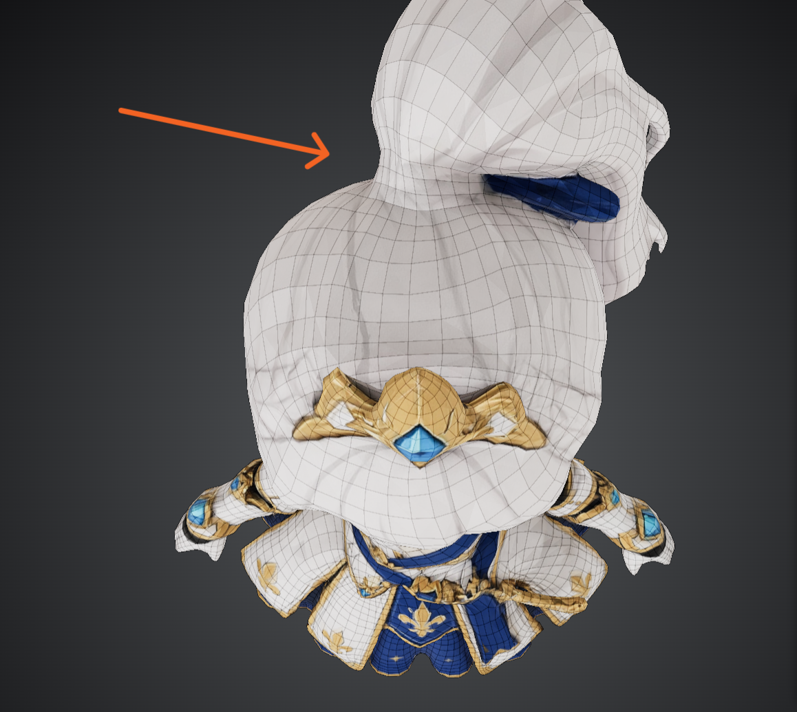
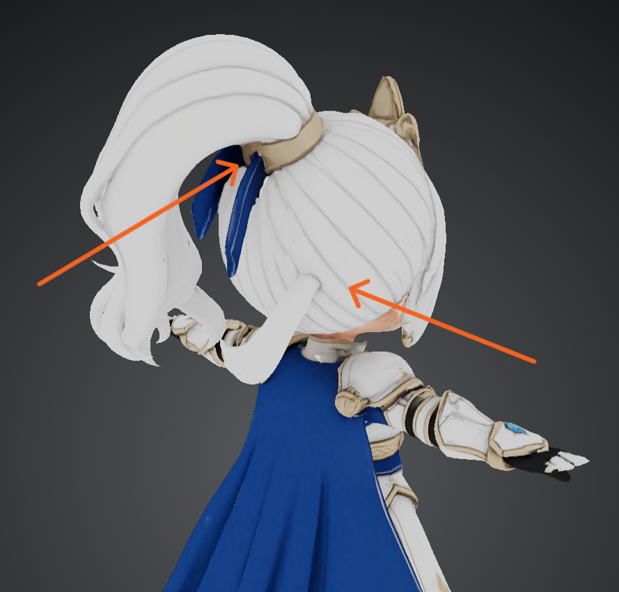
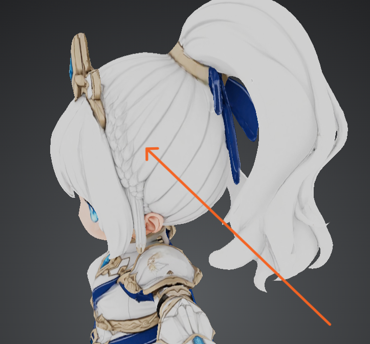
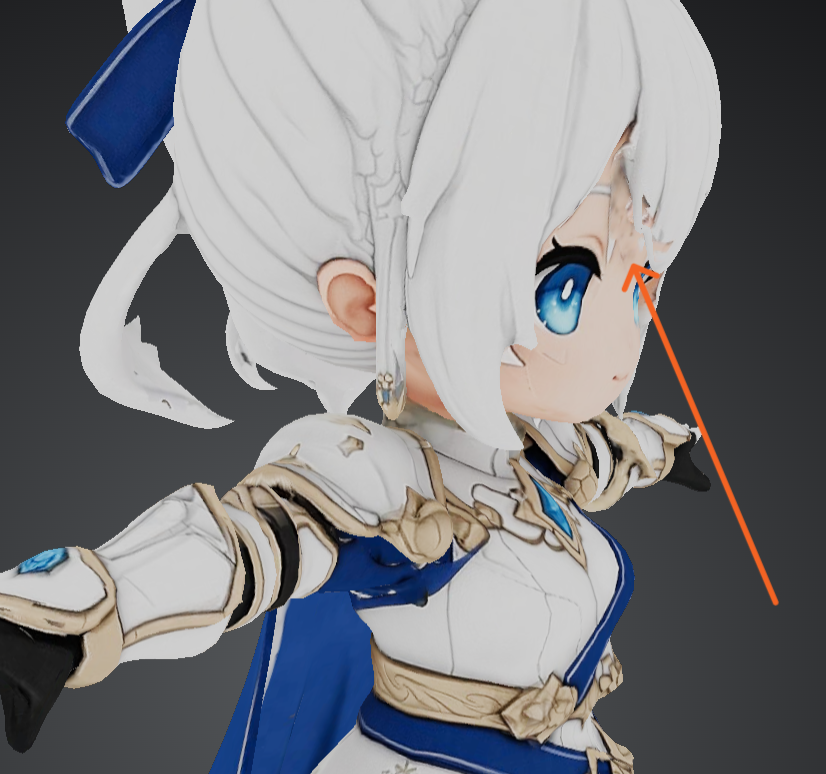
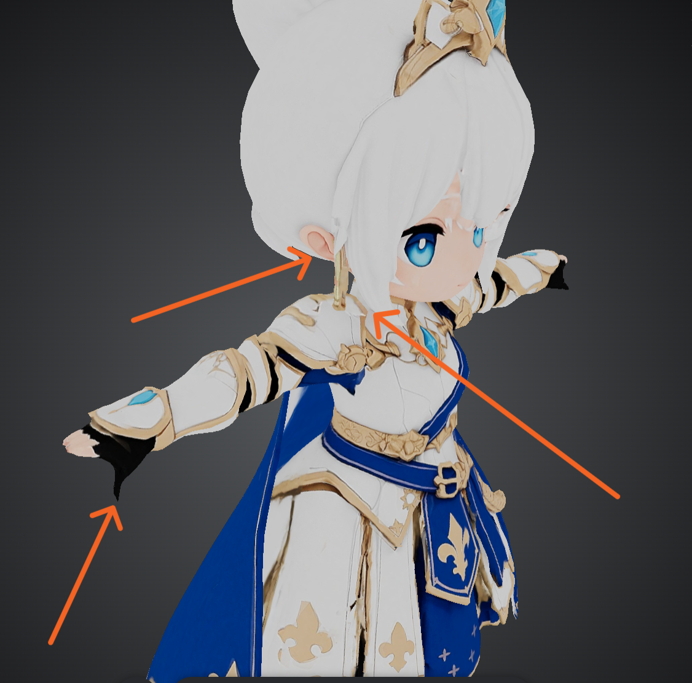
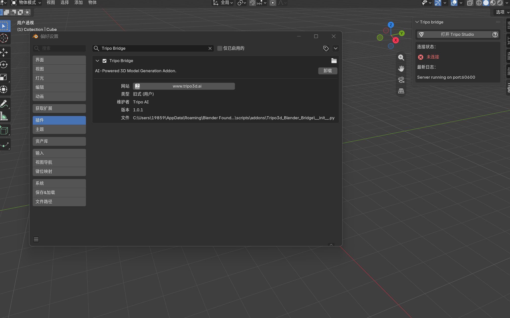
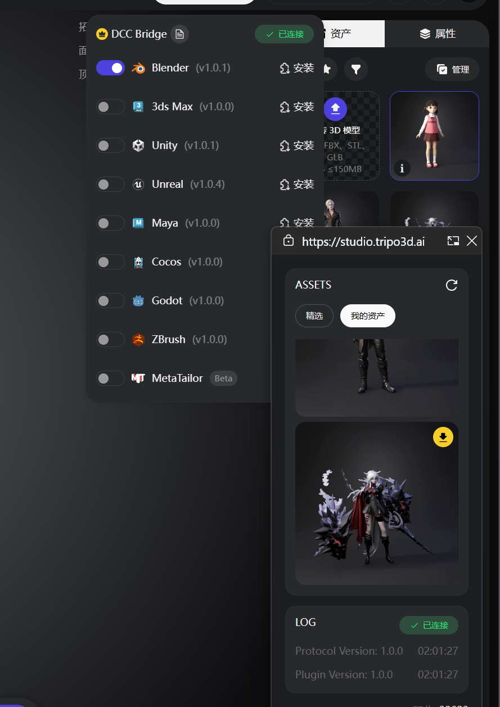
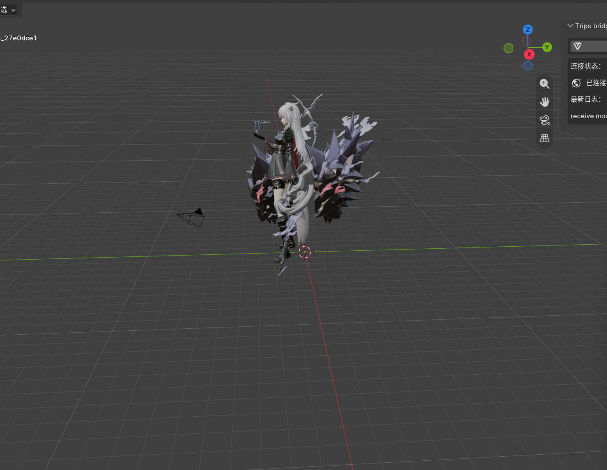

项目概述
Tripo3D是另一个基于AI的三维模型生成平台，专注于从图像或文本描述快速生成高质量的3D模型。本研究旨在对比Tripo3D与Meshy等平台的表现，探索其在游戏资产生产流程中的应用潜力。
平台特点分析
图像转3D
支持从单张图像直接生成3D模型，适合照片级别的模型创建
文本转3D
支持自然语言描述生成3D模型，快速实现创意概念
高质量输出
生成模型具有较好的拓扑结构和UV，便于后续处理
多格式支持
支持导出多种常见3D格式，兼容主流3D软件
模型生成视频展示
以下是使用Tripo3D平台进行3D模型生成的过程记录：
麦克（写实风男性角色）
写实风格人物模型生成过程
女骑士（卡通风格角色）
风格化卡通角色模型生成过程 - 视角1
女骑士（卡通风格角色）
风格化卡通角色模型生成过程 - 视角2
日常服装角色（卡通风格）
日常服装卡通风格角色模型生成过程
灵鹿（写实风格角色）- 视角1
写实风格灵鹿角色模型生成过程
灵鹿（写实风格角色）- 视角2
写实风格灵鹿角色模型生成过程 - 第二视角
古风女子（古风角色）
古风写实角色模型生成过程
测试案例与结果
一、写实角色模块：灵鹿（写实风格角色）
对灵鹿角色进行了写实风格的3D模型生成测试，探索Tripo3D在非人类角色生成方面的表现。通过灵鹿角色的生成过程记录了两个不同视角的生成视频。
灵鹿生成结果展示
以下是灵鹿角色的生成图片和UV展开图：
灵鹿生成结果 - 视角1
灵鹿生成结果 - 视角2
UV展开图 - AI生成效果
二、写实角色模块：麦克（写实风男性角色）
步骤1：角色设计参考图
在使用Tripo3D生成模型之前，首先需要准备角色设计参考图，包括三视图和大头照。这些参考图使用GPT Image 2.0生成，作为Tripo3D的输入参考。

步骤2：人物模型生成
探索Tripo3D在人物模型生成方面的表现
二、风格化角色模块：女骑士（卡通风格角色）
针对风格化卡通角色进行了专项测试，探索Tripo3D在生成非写实风格角色方面的能力。通过调整提示词，生成了具有鲜明卡通风格的女性骑士角色模型。
风格化骑士 - 正面视图
风格化骑士 - 侧面视图
风格化骑士 - T-Pose版本
生成过程中出现的问题
在生成女骑士模型过程中，也遇到了一些生成问题，如下所示：

生成问题 - 模型结构异常

生成问题 - 模型结构异常

生成问题 - 模型结构异常

生成问题 - 模型结构异常

生成问题 - 模型结构异常

生成问题 - 模型结构异常
日常服装角色模型深度分析
问题分析：
- 手部与服装黏连问题：由于我的参考图中手和衣服是贴合在一起的，AI识别成了一体的设计，生成出来的手跟裙子粘在一块，下次生成时最好把手分开一些。
- 模型多余块面问题：AI有时候生成出来的裙摆会有多余的块面，可能它对裙子的结构不是很理解。
- 腰部布线问题：本来两条线就可以解决的问题，但是AI生成出来的腰部会有没必要的布线，导致腰部布线不自然。
- 脸部不符合参考：生成出来的脸完全不是我三视图给的那个脸，跟预期的面部特征差异较大。
- 耳朵生成不稳定：每次生成耳朵部分都会出错，只有一两次耳朵是圆的还可以用，大多数时候耳朵都有问题。
优点：
- 腿部以下的质量较好：Tripo生成的下半身都没啥问题，可以拆下来直接用，上半身总是会出错。
T-Pose模型深度点评
优点：
- 披风与裙子分离，没有出现黏连问题，结构相对清晰
- 下半身除了鞋子，其他部件建模质量较高，可以拆开来直接使用
- 贴图生成效果尚可，基本符合风格要求
待改进问题：
- 复杂结构（尤其是腰部区域）需要手动拆分处理
- 手部生成质量不稳定，手指经常粘在一起，可能需要在参考图中明确分开绘制
- 硬表面/金属部件的面与面之间过渡错误，缺乏精细处理
- 拓扑结构类似ZBrush自动拓扑的效果，精度有待提升
总结：虽然Tripo3D能够快速生成风格化角色的基础模型，但对于精细结构和复杂部件的处理仍需人工干预和优化。建议在原画阶段将人物组件提前拆分，以获得更好的生成效果。
三、古风写实角色模块：古风女（古风风格角色）
针对古风写实角色（长裙拖地类型）进行了专项测试，探索Tripo3D在复杂服饰角色生成方面的表现。
- AI生成出来的模型跟给的三视图没有完整生出来
- 整体模型粘在一块，没有办法拆分
- 裙底是完全闭合的，不像裙子
- 脸的侧面没有形状
结论：这种类型的角色不如自己做来得快。
AI绑骨与动作生成实验
最近尝试了Tripo3D的AI自动绑骨功能，并测试了动作生成能力：
AI绑骨动作实验
测试Tripo3D自动绑骨和动作生成功能
实验中发现的问题
每次Tripo自动绑骨完成后，模型会自动向上移动一截，导致模型位置发生偏移，需要手动调整回原来的位置。
点击对应的动作按钮后，等待生成完成后界面没有任何反应。新用户可能会误以为生成失败，但实际上动作已经生成完成，只是没有自动播放。需要用户手动点击播放才能看到动作效果。
在动作播放过程中，模型某些部位会出现明显的拉伸变形，尤其是鞋子部分，变形后完全不像鞋子的样子。
手和裙子之间存在穿模问题，动作播放时手部会穿透裙子。
与Mixamo的对比
Tripo的绑骨效果整体比Mixamo好一些。如果上传的模型后面有飘带等附属部件，Mixamo很容易把脚和飘带绑在一起，导致动作严重失真。Tripo在处理这类复杂结构时表现相对更好。
总结
整体效果还行，但仍有较大的改进空间。绑骨和动作生成的质量还不够稳定，需要在后续使用中继续研究和优化。建议在绑骨前对模型进行适当的预处理，如简化复杂结构、拆分容易干扰的部件等，以获得更好的效果。
使用建议
- 绑骨完成后，注意检查模型位置是否发生偏移，如有偏移需要手动调整
- 动作生成完成后，不要误以为生成失败，尝试手动点击播放按钮查看动作效果
- 建议Tripo团队在后续版本中优化绑骨后的模型位置稳定性，并增加动作生成完成后的自动播放功能
Blender DCC 连接 Tripo 流程
Tripo3D 提供了 Blender DCC 插件，可以直接在 Blender 中连接 Tripo 平台，省去网页端上传下载的繁琐步骤，实现从生成到编辑的无缝衔接：

步骤一：安装并启动 DCC 插件

步骤二：配置 API 连接参数

步骤三：在 Blender 中直接生成模型
低模拓扑问题深度分析（步枪测试案例）
最近使用Tripo3D生成了一把步枪模型，设置面数为6000面（已经非常宽裕），但生成的低模拓扑存在严重问题，以下是详细分析：
问题截图展示

①

②

③

④

⑤
10000四边面测试视频展示
第二次测试将面数限制设置为10000个四边面，试图观察增加面数预算是否能改善拓扑质量：
10000四边面步枪拓扑测试
第二次测试：增加面数预算后的低模拓扑表现
设置10000四边面限制，实际生成了11355个四边面，超过了10000面的限制。更糟糕的是，增加面数预算后，枪口变形反而比6000面版本更加严重。
问题详细分析
在一些完全没有必要的地方做了大量布线，导致面数浪费严重。明明可以用更少的面来表现，却生成了复杂的边缘循环，完全是面数浪费。枪托部位尤其明显，布了一堆没有必要的线。
很多破面藏在小角落里面，不仔细检查根本发现不了。这些破面会导致后续烘焙法线贴图时出现严重问题，必须手动逐一修复。
本来就是平面的地方，AI会根据高模材质的颜色变化误判为需要加面的曲面，导致在完全平坦的表面上生成了不必要的细分，增加了面数负担。
整体布线不够规整，线条不够直。这给后续的UV展开和烘焙带来了很大麻烦，需要手动重新调整布线方向。
出现了大量五边面甚至更多边的多边形。这种n-gon在游戏引擎中会导致渲染问题，必须手动拆解为三角面或四边面。
设置14000边面限制时，实际生成了11355个四边面，超出了合理范围。更严重的是，这些多余的面分配在枪托等不需要高细节的地方，而枪口等关键部位反而变形严重，比6000面版本更畸形。
Tripo3D的组件拆分功能表现非常糟糕，完全无法正确识别和拆分模型的各个组件。拆分结果混乱不堪，经常把不该拆分的部分拆开，或者把该分开的组件粘在一起，完全达不到实际使用的要求。
金属头饰拓扑测试（新案例）
针对Tripo3D的低模拓扑能力，进行了新一轮金属头饰模型的测试：
设置面数限制为5000四边面，实际生成了5539个四边面，超出了539面。
问题截图展示

①

②

③

④
优点：边缘规整度提升
金属头饰的边缘不像步枪拓扑出来的那样歪歪扭扭，整体布线相对规整，说明Tripo3D在处理对称、曲面类模型时表现更好。
存在的问题：
有很多金属硬边存在多余的卡线，卡线对低模来说是多此一举，反而增加了不必要的面数和布线复杂度。
部分金属边缘的布线不够流畅自然，存在突兀的转折和不连续的边流。
设置5000四边面限制，实际生成5539面，超出约10.8%，面数控制精度仍需提升。
内部的花纹被完整拓扑出来，但对于低模来说这些细节其实可以省略。不过考虑到AI不了解这是小型头饰需要做减法，这个问题可以不追究。
总结与改进建议
- 对于硬表面道具（如枪械、机械零件），建议放弃使用Tripo3D生成低模
- 对于对称、曲面类模型（如头饰、装饰品），可以尝试使用，但仍需检查面数超限和卡线问题
- 如果必须使用，建议将生成的高模导入Blender/Max，使用Quad Remesher等专业工具重新拓扑
- 面数控制精度不足，设置5000面限制实际生成5539面，超出约10.8%
- 金属硬边存在多余卡线问题，对低模来说是多此一举
技术优势与局限性
优势
- 生成速度快，适合快速原型制作和概念验证
- 支持多种输入方式（图像/文本），灵活便捷
- 生成的模型基础结构完整，可直接作为细化基础
- 界面操作简便，易于上手
- 输出模型格式兼容主流3D软件，便于后续处理
改进空间
- 复杂细节的还原度仍有提升空间
- 我感觉整体人物还是得在原画阶段就把人物身上的组件全部拆分出来，才能更好地还原人物的结构和细节。
- 生成结果的随机性较大，需要一定筛选
- 材质和纹理质量可进一步优化
应用场景与建议
Tripo3D适合作为创意探索和概念验证工具，适用于：
- 快速概念设计和原型验证
- 简单物件和场景元素的批量生成
- 作为传统建模流程的辅助参考
- 灵感和创意的快速可视化
建议将AI生成的模型作为基础参考，需要进行大量手动优化和调整才能达到项目所需的质量标准。对于人物模型等高精度要求的应用，目前的AI生成技术仍有较大提升空间。
总结与展望
Tripo3D作为AI辅助3D模型生成工具，在某些应用场景下展现出了一定的价值。然而在人物模型生成方面仍存在明显的局限性，生成的模型质量不稳定，结构问题突出。期待未来版本能在细节还原和结构准确性方面有所改进。